Look 03
Look 03
The Morning Edit / 01
Out in
Out in
the world.
Personal style in real places. Architectural lines, everyday streets and the moments between destinations.
View the look ↗ Street / Travel / Style Enquire
Enquire

Explore the edits
A visual wardrobe, arranged by how the day feels. Select an edit to see the look and enquire.
Look 03Personal style in real places. Architectural lines, everyday streets and the moments between destinations.
View the look ↗ Street / Travel / StyleLight, expressive pieces with a relaxed point of view. A little colour, a little movement, and an ease that feels personal.
View the look ↗ Blush / Floral / Daylight Look 04
Look 04 Look 03
Look 03Confident colour and fluid silhouettes, captured in the rhythm of the city. Made for days that rarely stay in one place.
View the look ↗ Navy / City / MovementEasy combinations, considered prints and pieces that feel like you. The everyday, with a little more intention.
View the look ↗ Ease / Print / Monochrome Look 02
Look 02 Look 06
Look 06A softer palette and gentle texture for slow, sunlit hours. Pieces that hold their shape and still let you breathe.
View the look ↗ Champagne / Texture / SunlightWoven detail, sheer sleeves and a deeper palette. For evenings that ask for a little more presence.
View the look ↗ Lace / Weave / Evening Look 07
Look 077 looks, 29 photographs. Select a photograph to see its look.
See all looks ↗ Look 01
Look 01 Look 01
Look 01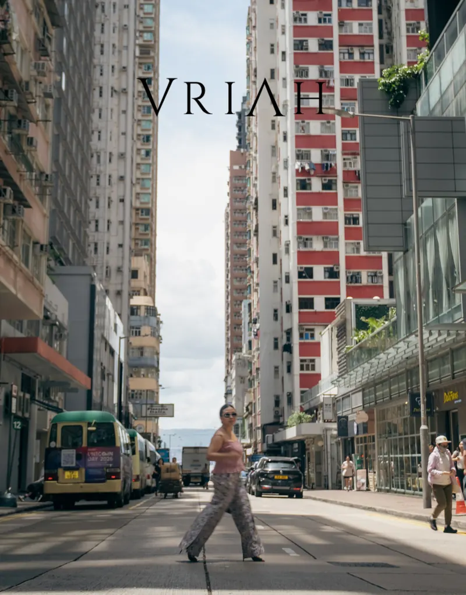
Look 01 Look 02
Look 02 Look 02
Look 02 Look 02
Look 02 Look 02
Look 02 Look 02
Look 02 Look 02
Look 02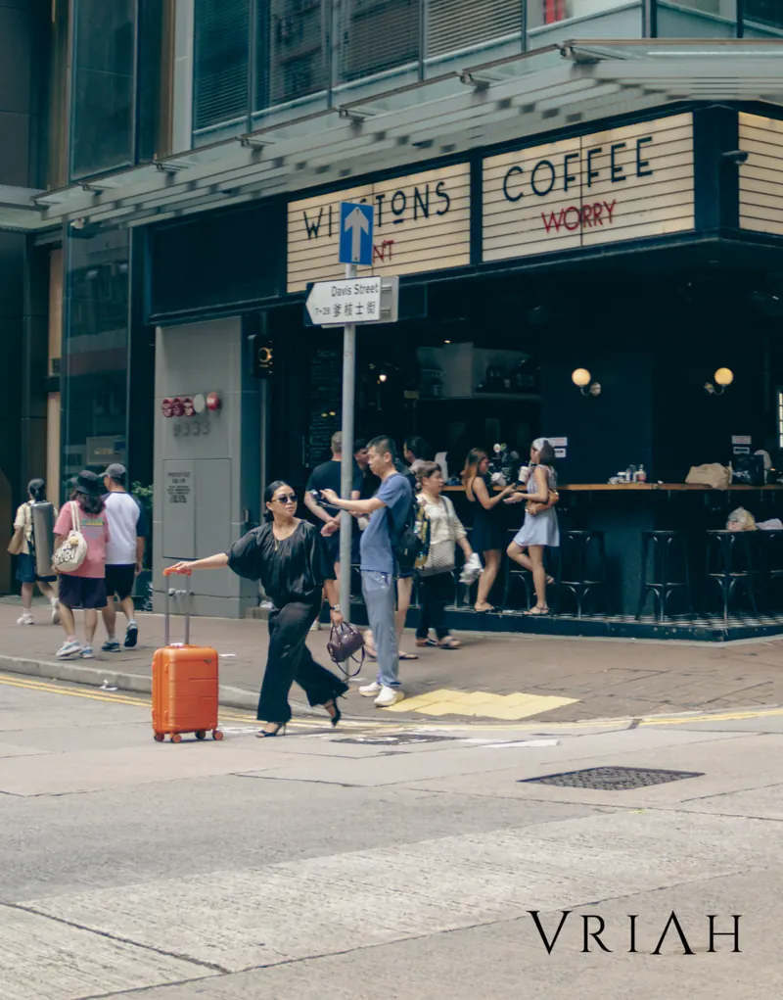
Look 02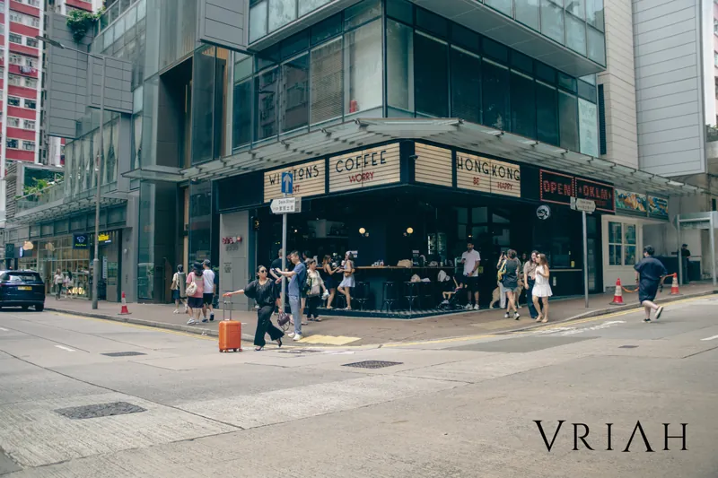
Look 02Look 02 Look 02
Look 02 Look 03
Look 03 Look 03
Look 03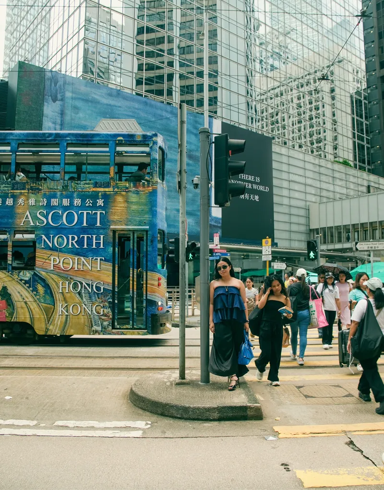
Look 03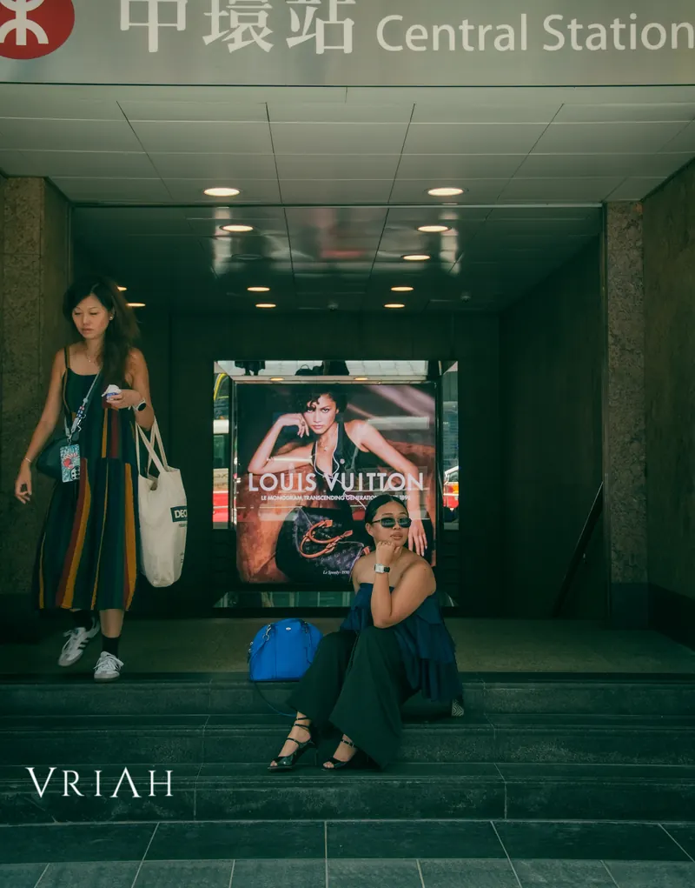
Look 03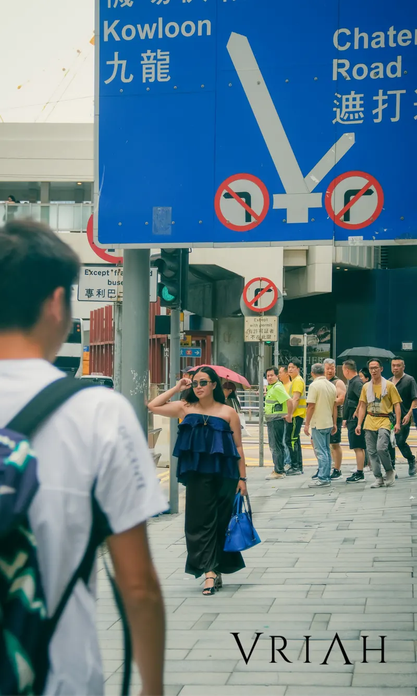
Look 03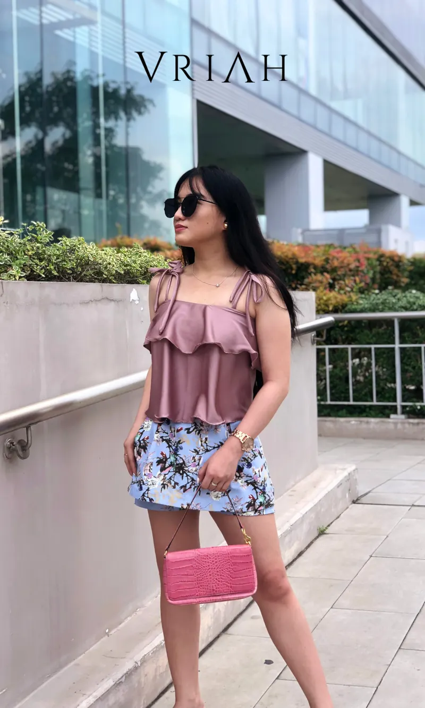
Look 04 Look 04
Look 04 Look 04
Look 04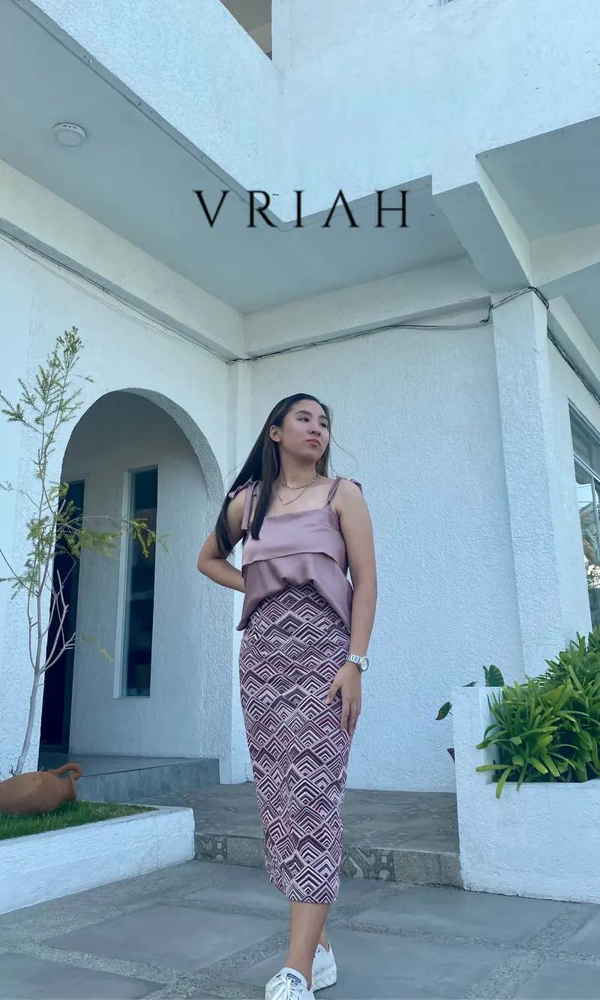
Look 05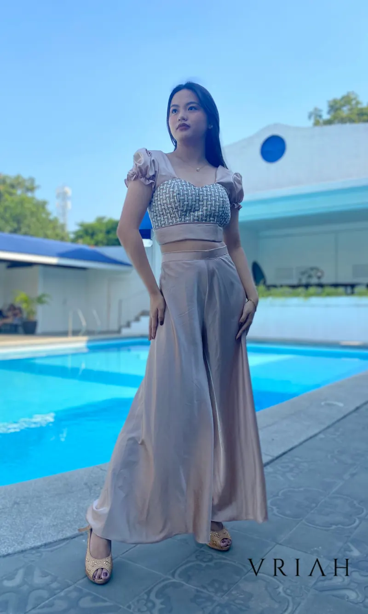
Look 06 Look 06
Look 06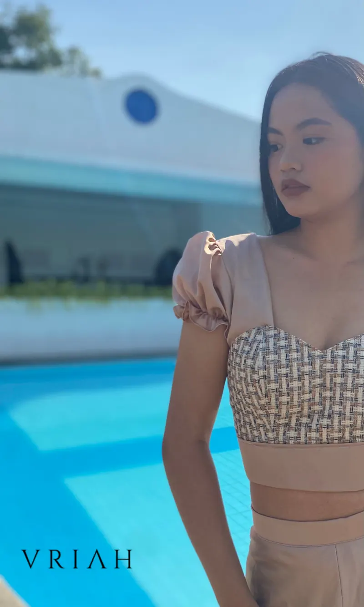
Look 06 Look 07
Look 07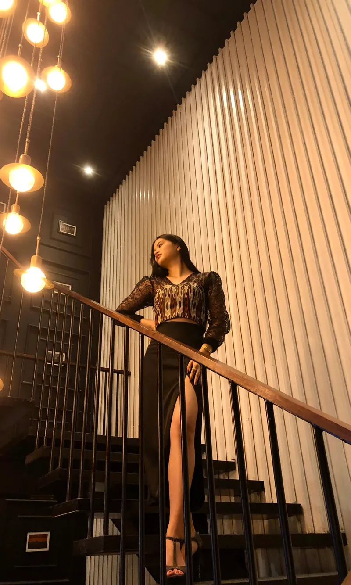
Look 07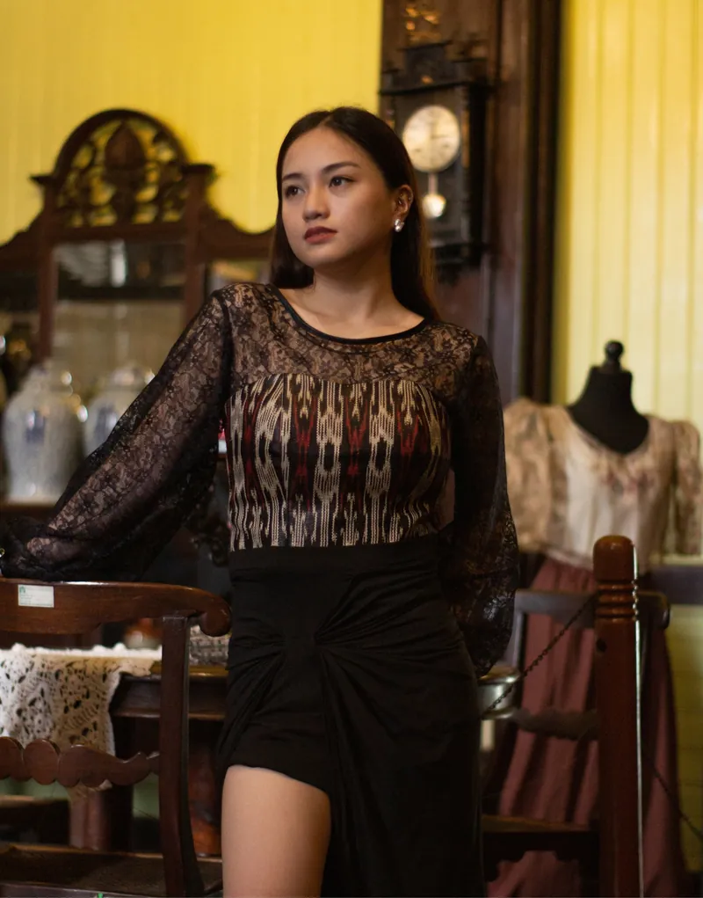
Look 07 Look 07
Look 07
our signature
a personal enquiry
Note its number, for example Look 02.
Tell us the look and your usual size. We reply with sizing and availability.
Details, payment and delivery are arranged directly in the conversation.